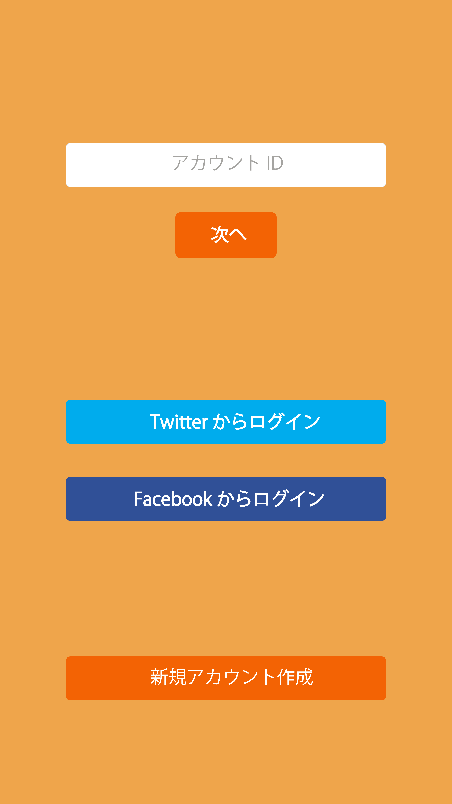

- 


人間関係マッピングアプリ「トモリエ」
使用ソフト：Illustrator
作成期間：2日
ハッカソン「DreamHack2016」で作成したアプリデザインです。
4人のチームで開発をし、私はデザイナーを担当しました。
メインターゲットは中高生で中でも自己顕示欲が強い人です。
友達や恋人等の関係をアピールすることができたり、人の関係を見ることができたら面白い
ということで作成しました。
明るい配色や、機能はあまりたくさんつけず、簡潔で見やすいUIを目指しました。